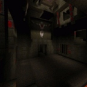
Deathmatch Maps Overview
Click on map image for details and overview
DM2: Claustrophobopolis
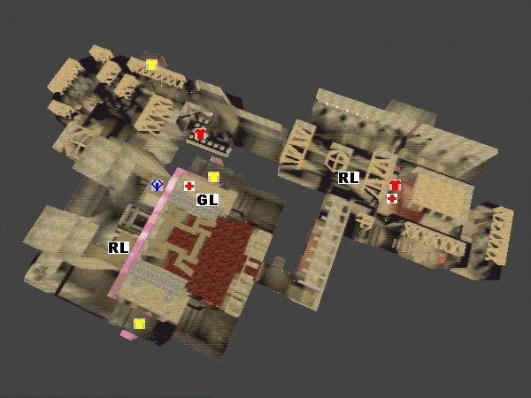
Introduction
DM2 is one of the "big three" teamplay maps for Quake. It is quite different from the other maps because its quite small with its tight corridors and offers a lot more armor than any other map. Also respawns are quite easy to camp here. This often enables good teams to spawnrape their enemies and scores high up in the hundreds. On the other hand, DM2 is also famous for exciting comeback games which are decided by a few frags. The layout with the many switches, platforms, lifts and lava makes it very confusing to people new to the map but with a few tricks the dreaded lava is easily avoided.
Items available
Weapons:
- 2 rocket launchers
- 1 grenade launcher
- 1 super shotgun
- 1 nailgun
Armor:
- 2 red armor
- 3 yellow armor
Powerups:
- 1 Quad
- 2 Megahealths
Important areas
There are 3 important areas in Claustrophobopolis: The Area containing the quaddamage and a rocketlauncher, the nailgun/yellow armor area where both a red armor and a yellow armor are to be found and finally the lower rocketlauncher area. All areas are well interconnected with at least two entrances . There is also a huge room where one can find another two yellow armors and which is often used to launch attacks on the quad area. The floor of that huge room can be removed temporarily by a swich reveiling the lava beneath it but doing so is both dangerous and usually useless.
Lower Rocket launcher and back room
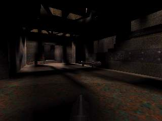
The room with the lower Rocket
launcher is on the weaker side of the map. People often camp on the ledge just above the
Rocket launcher.
There is a passage leading over some moving platforms to the huge hall. Another passage goes to a lift to the entrance of the hidden Red armor and the gallery leading to the nailgun area. The other two entrances lead to the back room. People in this area are very vulnerable to Quadruns.
The back room contains a Super shotgun, some rockets and most importantly a Red armor and a Megahealth. One can get those either by pressing a switch which will create a bridge and going through the Rocket launcher room to reach it or by jumping over to the ledge. There is also a teleporter there leading into the hall which is often used for escaping from Quad attacks.
There is a passage leading over some moving platforms to the huge hall. Another passage goes to a lift to the entrance of the hidden Red armor and the gallery leading to the nailgun area. The other two entrances lead to the back room. People in this area are very vulnerable to Quadruns.
The back room contains a Super shotgun, some rockets and most importantly a Red armor and a Megahealth. One can get those either by pressing a switch which will create a bridge and going through the Rocket launcher room to reach it or by jumping over to the ledge. There is also a teleporter there leading into the hall which is often used for escaping from Quad attacks.
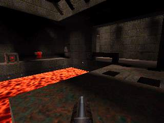
Secret red armor:
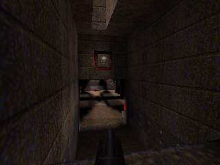
This is not really a secret room
because its so easy to find. Shooting the switch opposite of the lift will open the
entrance for a short time. Jumping down will give you the Red armor.
The exit will open by walking towards it and leads into the shallow water area. This room is very small, good for ambushes or trapppings and infamous selfkills.
The exit will open by walking towards it and leads into the shallow water area. This room is very small, good for ambushes or trapppings and infamous selfkills.
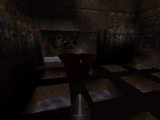
Nailgun and water
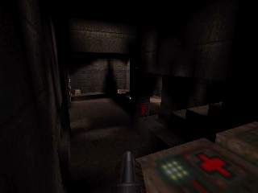
This area contains some healthpacks
and the Nailgun which is the worst weapon on this map. The healthpacks here are usually
needed to recover from fights in the other areas. What makes this area really interesting
is that there are 3 respawn points which are very easy to control.
There are connections to the lower Yellow armor, the Quad area and the gallery leading to lower Rocket launcher and secret Red armor entrance. This area is often attacked first.
There are connections to the lower Yellow armor, the Quad area and the gallery leading to lower Rocket launcher and secret Red armor entrance. This area is often attacked first.
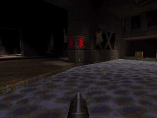
Lower yellow armor
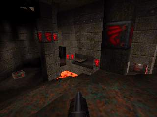
Here we have a long stairway leading
down to a switch. Behind the bars it opens is a Yellow armor and a teleporter leading to
the moving platform to the Grenade launcher as well as the higher Rocket launcher and the
Quad.
This teleporter is the main access to the Quad and therefore very important. With a box of rocket and some healthpacks in addition to the Yellow armor, this area is quite easy to defend.
This teleporter is the main access to the Quad and therefore very important. With a box of rocket and some healthpacks in addition to the Yellow armor, this area is quite easy to defend.
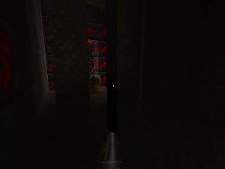
Quad area
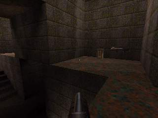
The Quad lies high above the rest of
the surrounding area. Jumping across the gap into the tunnel will bring you to the second
Rocket launcher in the map. Near that one there is a huge and noisy lift leading up to the
exit of the Yellow armor teleporter and the moving platfrom to the Greande launcher and a
Megahealth. Beside that entrance there are two others, one passage to the large room and
the other to the nailgun area which can be partially controlled from here.
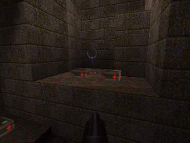
Big room
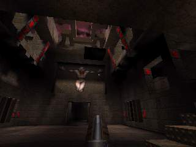
The big room interconnects the lower
Rocket launcher area and the Quad area. It is a huge symmetric area containing two Yellow
armors. These are in some sort of cages which can be accessed by a stairway. Within the
cage there are switches which will temporarily remove the floor in the center reveiling
the deadly lava beneath. This is not very usefull though because one can get out of the
lava while the one in the cage is trapped. The only way out is through a teleport leading
into the middle of the room and hence into hot oblivion. Additionally there are switches
in the passages to the big room with which players inside the cages can be squished. High
in the air there is a platform moving from the Grenade launcher and Megahealth to
the Yellow armor teleport exit.
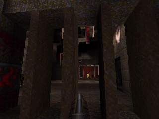
Popular shortcuts
There are plenty of shortcuts on this map. Usually they either
involve strafe jumping or rocket jumps. One of the most common jumps and probably the
first one every quake player learns is the jump over the lava from the low Rocket launcher
room to the back room. Getting to the Red armor and Megahealth there also involves a
strafe jump over the lava to avoid having to press buttons. Another popular jump is the
shortcut to the lower Yellow armor throught the columns confining that lava pool. One of
the trickier jumps is from the high Rocket launcher to the Quad.
Rocketjumps are usually used to get to the Quad area without using the teleporter at
Yellow armor. These are very common, but there it is also possible to rocketjump from the
stairs in the big room directly to the Grenade launcher or the high entrance to the Quad
area.
Another shortcut is the so called "Quad ladder". Standing on the middle step
under the Quad enables a teammate to jump on your head and to the Quad from there. This is
often seen at the start of the map when players cannot rocketjump yet and sometimes its
funny because an enemy accidently uses your help.
Basic strategies
Basically the strategy on DM2 is to control all three important
areas Quad, Nailgun/Yellow armor, lower Rocket launcher and then respawn rape. But this
sound easier than it is and requires good teamplay, skill and powerup/weapon/armor respawn
timing.
Usually one guy would camp the lower Yellow armor thus locking the main entry to the Quad
and a upper Rocket launcher. But this position is quite vulnerable for attacks from the
secret Red armor so someone should always be around to take this armor and to intercept
attacks from the lower Rocket launcher and to help out at Quad if necessary.
The Quadrunner is usually occupied with keeping the Quad area clean from attackers and
attacking with Quad himself. The classic Quadrun leads into the lower Rocket launcher room
where he would frag as many enemies as possible and then leave through the tele in the
back room once Quad runs out.
Last but not least someone tries to camp the low Rocket launcher. His job is to take the
Rocket launcher whenever it appears and also to time the Red armor and the Megahealth in
the back room. Locking the lower Rocket launcher is a major relieve for teammates on the
other side of the map.
DM3: The Abandoned Base
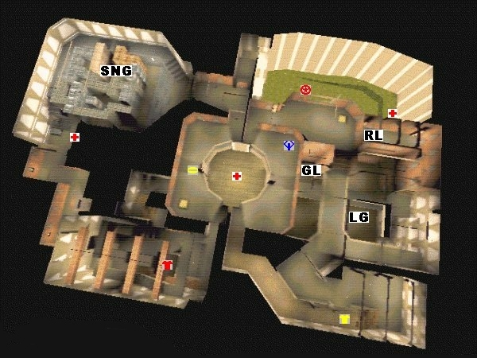
Introduction
If there is one level that could be considered the grand-daddy
of all teamplay maps, it should be DM3. Together with DM2 it was already present in the
first public test release of Quake. Offering great strategic possibilities and an
incredible amount of tricks to master, it has been popular since the release of Quake Multiplayer Test Release (qtest).
Primarily used for deathmatch teamgames, other maps used for the same purpose -even in
different games- have been compared to it.
Items available
Weapons:
- 1 rocket launcher
- 1 lightning gun
- 1 grenade launcher
- 1 super nailgun
- 1 super shotgun
- 1 nailgun
Armor:
- 1 red armor
- 1 yellow armor
Powerups:
- 1 Quad
- 1 Pentagram of protection
- 1 Ring of invisibility
- 3 Megahealths
Important areas
DM3 is really split in 2 parts where the main connection between them is in one central atrium. One side of the map contains the Quad, the three strongest weapons and the Yellow armor; the other contains only the two nailguns, the Red armor and a Megahealth. It is possible to get from the strong part to the weak part by another way, but this is not often used as it involves a few slow (and noisy) platforms. The Pentagram and one Megahealth are in this area however. The remaining Megahealth sits right in the middle of the level while the Ring is also placed centrally, right across the Quad.
Rocket launcher - Bridges area
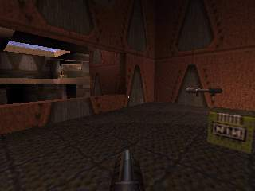
This area contains the Rocket Launcher
in a small room with a window overlooking a water body. The Lightning gun is in the water
right across the window while the Grenade launcher can be found a short swim away.
A submerged tunnel leads to the outside area with the Pentagram. From the Rocket launcher, stairs and bridges connect to the Yellow armor area and to a window over the Pentagram.
A submerged tunnel leads to the outside area with the Pentagram. From the Rocket launcher, stairs and bridges connect to the Yellow armor area and to a window over the Pentagram.
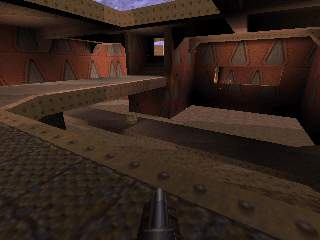
Yellow armor area
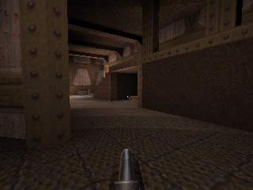
The Yellow armor is tucked away in a
dark corner close to the Super shotgun. From this area a walkway leads to the Quad, and
the other exit goes back to the bridges. Right behind the armor is a teleport that exits
to the window over the Pentagram.
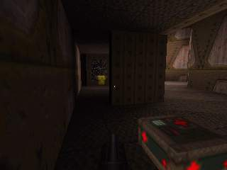
Central Quad & Ring area
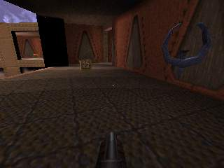
The circular central hub of the map is
home to probably the most important item, the Quad. It sits on the balcony at the side of
the Rocket launcher and Yellow armor areas. On the opposite balcony, the Ring makes its
appearance once in a while, every 5 minutes to be precise. In between them, on the lower
level sits a Megahealth.
To summarize connectivity: all ways lead here. The Yellow armor, Rocket launcher, Red armor, and Super nailgun are all located at about the same distance. Four high and two low roads even provide alternative routes to all.
To summarize connectivity: all ways lead here. The Yellow armor, Rocket launcher, Red armor, and Super nailgun are all located at about the same distance. Four high and two low roads even provide alternative routes to all.
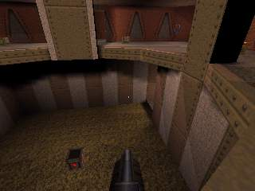
Red armor area
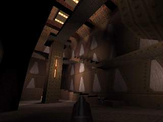
The Red armor is in a room of its own
high on a winding stairway.
Rather small exits lead to the Quad area, both the low and the high level and to the warehouse.
Rather small exits lead to the Quad area, both the low and the high level and to the warehouse.
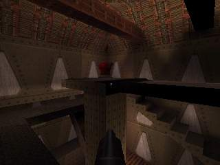
Warehouse
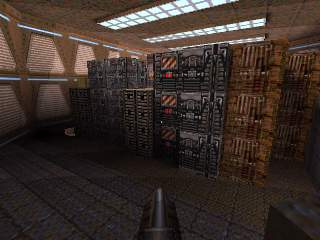
The warehouse is characterised by the
presence of the Super nailgun and -obviously- plenty of ammunition boxes. A megahealth is a
few jumps away behind a corner.
From here to the Quad is but a short walk. Gettin to the Red armor requires navigating some tight corridors. In these there is a teleporter, which puts you near the Ring in the central area.
From here to the Quad is but a short walk. Gettin to the Red armor requires navigating some tight corridors. In these there is a teleporter, which puts you near the Ring in the central area.
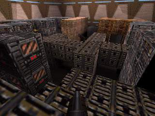
Pentagram outside area
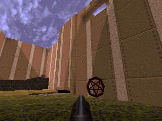
The imminent apparition of the
Pentagram often leads to battles involving more then half of the players in this huge
outside area. A nearby Megahealth can aleviate some of the pain.
Getting to the Pentagram is no problem; just drop down from the window overlooking the whole area. Getting out of the area is different issue alltogether. It takes either a long swim through the tunnel to the Rocket launcher area or a slow ride on a few elevators to the Warehouse. Or take the shortcut ...
Getting to the Pentagram is no problem; just drop down from the window overlooking the whole area. Getting out of the area is different issue alltogether. It takes either a long swim through the tunnel to the Rocket launcher area or a slow ride on a few elevators to the Warehouse. Or take the shortcut ...
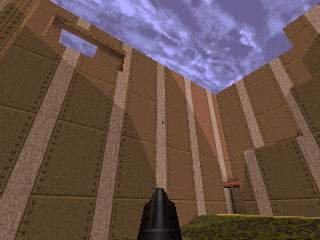
Popular shortcuts
Over the years DM3 has evolved from a huge map into an
environment that can be navigated amazingly quick. Rocketjumps and other tricks to get
around fast are essential for survival here.
To name just a few: jumps across the central area, from the Quad side to the Ring side;
several jumps in the Red armor area to cut the time to reach in half; rocket jumps from
the outside areas back to the high window; jumps from the bridge to the Rocket launcher.
The top players perform many, many more.
Basic strategies
The main strategy is simple: keep weapons, armors and Quad away from the enemy. The execution has changed quite a bit over the years however. Whereas people tended to just stay near the Rocket launcher in the early days, teams now tend to focus a lot of attention on the Red armor. The Ring and especially the Pentagram that appear every five minutes can send a real shockwave through the game with more often then not over half of the players ending up in tiny bits.
DM6: The Dark Zone
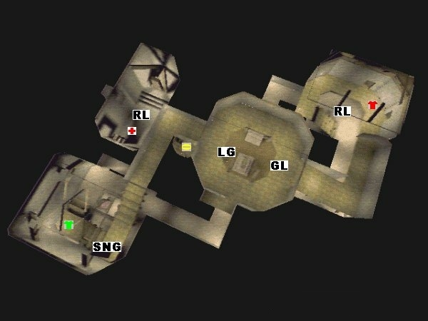
Introduction
The Dark Zone has always been a classic 1on1 and 2on2 map. Its popularity as a map for teamplay differs alot depending on your location on the globe. While it is a true test of raw skills (aim, movement and predictions) for some, it is a messy chaos for others. Usually a match here is very action packed and exciting for the players, while watching a match here can be quite boring because of the frag, frag, kill, frag, kill, frag, frag style. DM6 is a very good map to play for less experienced players because its easy to understand and play in comparison to the other classic teamplay maps.
Items available
Weapons:
- 2 rocket launchers
- 1 lightning gun
- 1 grenade launcher
- 1 super nailgun
- 1 super shotgun
- 1 nailgun
Armor:
- 1 red armor
- 1 green armor
Powerups:
- 1 Ring of invisibility
- 1 Megahealth
Important areas
All games on DM6 evolve around controlling the Red armor area. Once that area is cleared, control is extended to the other parts of the map. Together with the RA you control one of the two rocket launchers. The second on is on the other side of the map in a small room together with the megahealth powerup. In the central area all other areas connected on two different levels. The grenade launcher sits on the upper ledge and a shootable platform reveals the entrance to the lightning gun room with the Ring.
Red armor area
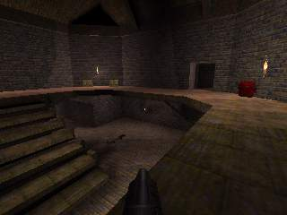
The red armor is located on the upper
ledge of this area. Some stairs opposing the armor lead onto that ledge. Right in front of
the armor, the rocket launcher can be picked up at the ground level. Under the stairs
there is also the super shotgun.
Three ways lead out of this area. A small hallway across the red armor leads into the center area, just like a longer and wider one. The upper ledge leads to the grenade launcher area but a gap along the side allows to drop down to the ground level. Right behind the red armor, a respawn point is hidden in a tiny passage with two exits.
Three ways lead out of this area. A small hallway across the red armor leads into the center area, just like a longer and wider one. The upper ledge leads to the grenade launcher area but a gap along the side allows to drop down to the ground level. Right behind the red armor, a respawn point is hidden in a tiny passage with two exits.
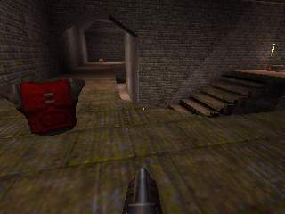
Grenade launcher area
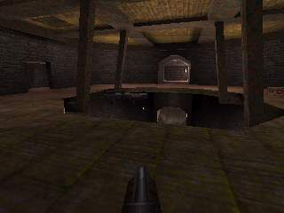
From the ledge of the red armor, a
slope leads up to the greande launcher. A wide circular ledge hovers high over the central
part of the map.
Across the opening, a hallway leads to the stairs with the green armor. On one side of the ledge there is a respawn point in the walls, on the other side there are some healthpacks. Looking down here gives a good view on most of the entrances the central area holds: the three ways to the red armor, the upper and lower hallway to the stairs, the entrance to the lightning gun and the tube to the megahealth room. The central teleporter can easily be jumped into from here.
Across the opening, a hallway leads to the stairs with the green armor. On one side of the ledge there is a respawn point in the walls, on the other side there are some healthpacks. Looking down here gives a good view on most of the entrances the central area holds: the three ways to the red armor, the upper and lower hallway to the stairs, the entrance to the lightning gun and the tube to the megahealth room. The central teleporter can easily be jumped into from here.
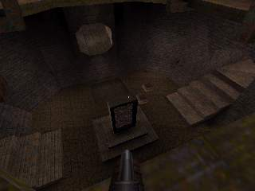
Stairs and Green armor area
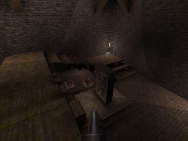
Two long flights of stairs along two
walls of the room lead downwards. Both a super nailgun and the green armor are located on
the stairs. In the middle of the room there is a teleporter leading into the megahealth
room. Next to the teleport, the only pack of rocket ammo box on this map is positioned. In
a corner, another respawn point is hidden.
Besides the upper hallway to the grenade launcher, there is another one leading back to the center below the stairhead. The teleport serves as the exit for all other teleporters on the map.
Besides the upper hallway to the grenade launcher, there is another one leading back to the center below the stairhead. The teleport serves as the exit for all other teleporters on the map.
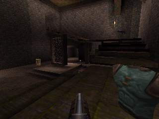
Megahealth room
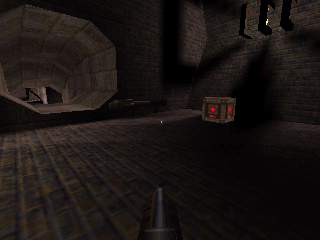
This is small room that contains the
second Rocket launcher as well as the Megahealth powerup. They are both right in front of
the teleporter which goes back to the Green armor stairs.
A 'tube' leads from this room to the central area.
A 'tube' leads from this room to the central area.
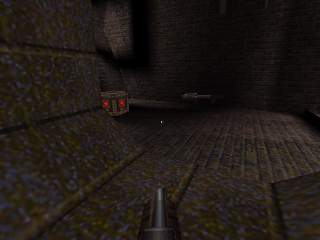
Central area
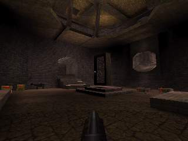
This center area interconnects all the
other rooms.
In the middle of this rather large space, another teleporter leads to the teleporter in the Green armor room. In front of the tele lies the flimsy nailgun. Behind the teleporter is the secret entrance to the Lightning gun corridor.
In the middle of this rather large space, another teleporter leads to the teleporter in the Green armor room. In front of the tele lies the flimsy nailgun. Behind the teleporter is the secret entrance to the Lightning gun corridor.
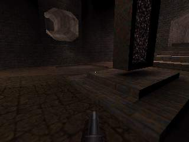
Lightning gun corridor
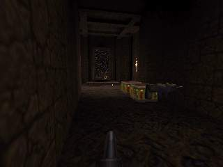
This secret corridor can be accessed
by shooting a floorplate in the central area. Besides the Lightning gun and some ammo, the
Ring also appears here. The teleporter leads back to the central area.
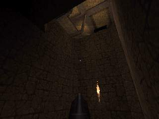
Popular shortcuts
The most common shortcuts are of course all sorts of rocketjumps
up to the Red armor. Taking the stairs instead is slow and deadly. Skilled rocketjumpers
can perform flat but long jumps form the long entrance directly onto the armor, often
surprising the Red armor guards.
Multiple use of teleporters is also often used as shortcut. This "double'
teleporting' sometimes results in telefragged teammates though.
Bunnyhopping and especially adding speed to them through rocketjumps has also become
common. For example it is possible to master the gap in the Grenade launcher area with
just one jump this way.
One of the less common shortcuts involves a bug with the Ligthning gun platform. When
someone hits it with the Lightning gun, it will go up in the air for a glimps of a second.
With the right timing you can rocketjump to the upper ledge near the Grenade launcher. A
direct rocketjump from the center floor is very difficult and not usually attempted in
matches.
Basic strategies
Both in teamplay and duel the basic strategy is to control and
take the Red armor. Usually one or two guys camp there. Camping the other rocketlauncher
is also a key to win this map. The fourth member of a team ideally covers some of the
entrances (and respawn points) in the center from the Grenade launcher area.
Every five minutes the ring respawns and it is often used to attack and overtake Red
armor.
Due to the nature and the size of the map it is not possible to really lock it down except
when the skill gap between the teams is very large. Therefore, games here are usually
quite exciting with control and lead changing constantly.
E1M2: Castle of the Damned
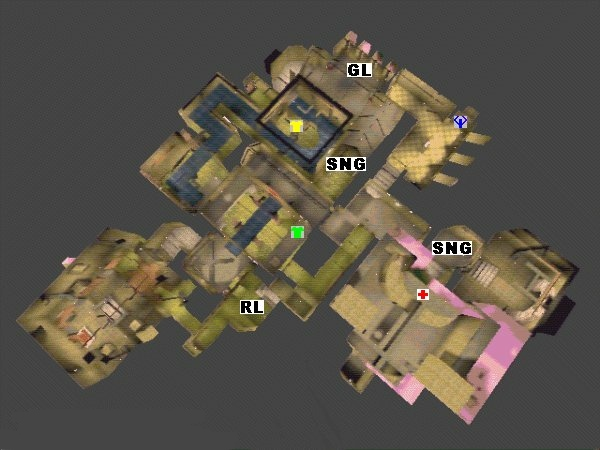
Introduction
E1M2, Castle of the Damned is both a classic teamplay and duel map. A lot of important matches took place here, like the one in which Tresh won his Ferrari in the Red Annihilation tournament or the famous games between DeathRow and Clan Nine. As a teamplay map it has always been the map of the top clans who are able to score bigtime here against weaker teams and as soon as two equally skilled teams meet here you can be sure to see and exciting match. E1M2 favours teamplay and good communication over personal skill and this is probably the reason for its huge popularity.
Items available
Weapons:
- 1 rocket launcher
- 1 grenade launcher
- 2 super nailgun
- 1 super shotgun
- 1 nailgun
Armor:
- 1 yellow armor
- 1 green armor
Powerups:
- 1 Quad
- 1 Megahealth
Important areas
The most important area on E1M2 is the area spanning the Yellow armor area, over the Grenade launcher room to the Quad area. Most of the action during a match takes place there and strategy evolves around controlling both Yellow armor and Quad. Contrary to any other map, the room where the Rocket launcher is located is of minor significance. An area that should not be neglected is the Megahealth area near the single player level exit. Attacks are often launched from there. Then there is also the bridge leading to the Yellow armor area which has some nail traps in the walls that are very noisy and, at times, deadly. Finally there is the start area with a submerged entrance to the Rocket launcher room and the central bridge area connecting several sections of the map.
Yellow armor area
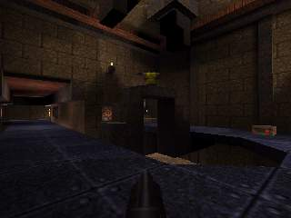
The Yellow armor resides on a tiny
bridge over a shallow pool of dirty water.
A 'U' shaped walkway leads on one side to the Grenade launcher area and on the other side, through the nail traps, to the central bridge. The water contains a teleporter to the central bridge area.
A 'U' shaped walkway leads on one side to the Grenade launcher area and on the other side, through the nail traps, to the central bridge. The water contains a teleporter to the central bridge area.
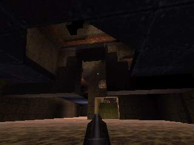
Grenade launcher room
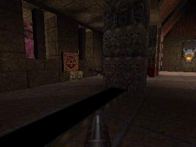
The Grenade launcher lies behind a
column in a rather large room with a tall roof, lots of healthpacks and some nail ammo.
A passage leads down some steps into the Yellow armor area. At the opposite side, an opened door gives out into the Quad area.
At the start of the match, part of the room is locked by walls that can be lowered by walking through the Yellow armor passage. Next to the grenade launcher is a switch. Activating it extends a narrow bridge to a small niche with a box of rockets. Below this bridge is a Super nailgun and jumping down to that will lower yet another wall, reavealing a passage leading right under the Yellow armor.
A passage leads down some steps into the Yellow armor area. At the opposite side, an opened door gives out into the Quad area.
At the start of the match, part of the room is locked by walls that can be lowered by walking through the Yellow armor passage. Next to the grenade launcher is a switch. Activating it extends a narrow bridge to a small niche with a box of rockets. Below this bridge is a Super nailgun and jumping down to that will lower yet another wall, reavealing a passage leading right under the Yellow armor.
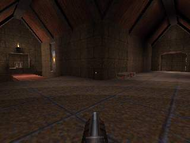
Quad area and crossroads
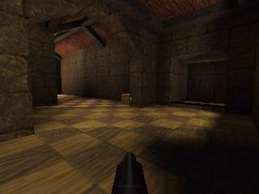
The Quad lies in a small niche of a
smallish room that is connected both to the Grenade launcher area and to the crossroad
area which connects the Megahealth room, the exit of the Rocket launcher room and the
central bridges area.
At the start the Quads niche is closed and needs to be opened by pressing the nearby switch, attached to the pillar in the middle of the room.
At the start the Quads niche is closed and needs to be opened by pressing the nearby switch, attached to the pillar in the middle of the room.
Megahealth room
The Megahealth sits on a high ledge in
a large room with only a small entrance. At the bottom, in the corners of the room, there
are teleporters which will take you up onto that ledge. Nearby the megahealth you can also
find some health and ammo. A passage right below the Megahealth leads into the exit area
(which cannot be used in multiplayer games). The exit area also contains a Super nailgun,
one of the few good weapons on the map.
Central bridge area
Actually, three bridges run parallel
to each other here. The central one extends from the exit of the Nailgun room. The
teleport in the Yellow armor area ends on a side bridge which also holds a Green armor. The
third bridge has a Super shotgun and connects to the Yellow armor area through the nail
trap. A sliding door gives access to the crossroads.
The water below the bridges offers additional interconnectivity. Below the bridge with the Super shotgun, a small stream flows from the Yellow armor area. Another water filled room leads to the Rocket launcher. Last but not least, an elevator can be used to get out of the water onto the bridges.
The water below the bridges offers additional interconnectivity. Below the bridge with the Super shotgun, a small stream flows from the Yellow armor area. Another water filled room leads to the Rocket launcher. Last but not least, an elevator can be used to get out of the water onto the bridges.
Nailgun room
This room, which is the single player
start area, contains a (fairly useless) Nailgun. An underwater exit leads to the Rocket
launcher while the central bridge area can be reached without taking a dip.
Rocket Launcher room
The Rocket launcher lies in a very
small and tight room which has two entrances and three exits. Both entrances come from the
water and since you cannot see through the murky water, attacks from there are almost
always surprising. The third exit leads also into water that can be exited towards the
crossroads.
Popular shortcuts
Unlike the other maps, E1M2 offers only a few shortcuts. The few there are are easy to perform as well. Obviously jumping over bridges like at the Yellow armor area is easy. The only other shortcut that is at least hard to find and involves some minimum strafe jumping skill is the jump to the Super nailgun below the Grenade launcher area. Usually you can only access it by jumping down from the Greanade launcher area and getting onto the ledge from the water seems to be impossible. But the threshold of the passage out of there is slightly higher than the rest of the ground. From there you can easily jump to the Super nailgun ledge. Bunnyhopping plays a mayor part nowadays on this map because it is important to get from one area to the other in a short time.
Basic strategies
The strategy in E1M2 is to control the Yellow armor, Grenade
launcher and Quad areas. Unlike many other maps the rocketlauncher is not camped. The
reason is that defending the small room for a longer time is almost impossible since there
is very little armor on the map and you easily frag yourself when shooting rockets in the
tight quarters of the Rocket launcher, especially when it gets crowded by enemies.
Since there are only two armors (of which the Green one is quite weak), weapons other then
the Rocket launcher become more important. In this case its the Super nailguns. A Super
nailgun protected by a Yellow armor can easily defend against attacks, even with Rocket
launchers.
Controling the important area requires good strategy and communication because positions
are often switched. Usually one player waits until the Yellow armor spawns, takes it and
then moves on to the Quad area. Enemies will often 'bring' you the rocketlaunchers.
Sometimes enemies that snatched a Rocket launcher retreat to the Megahealth room an try to
stock up on ammo and health before they go on to attack the Quad area. Since there is only
a small entrance to that Megahealth area, its rather easy to defend so you can sit there
until your teammates all have Super nailguns. The classic Quadrun on E1M2 takes care of
that situation by cleaning the Megahealth room.
Attacks on the important area are either sneaky or involve flooding. There are only two
ways to enter the Yellow armor/Quad area (besides spawning). Sometimes players with a
Rocket launcher will try to attack the Yellow armor area from below, from within the
water. Once in a while they manage to get there unnoticed and might rocketjump right onto
the Yellow armor or in the face of the guy camping there. Often areas are 'flooded' by
attackers just with their shotguns. Since there is not much armor around this is a quite
successful tactic.
E3M7: The Haunted Halls
Introduction
E3M7 is a pretty small map with tight tunnels and many powerups.
The respawns are easy to camp on this map, so a good clan with control can get many frags
in a short time.
Items available
Weapons:
- 2 rocket launcher
- 1 grenade launcher
- 1 super nailgun
- 1 nailgun
Armor:
- 1 red armor
- 2 yellow armor
- 1 green armor
Powerups:
- 2 Quads
- 1 Pentagram of protection
- 1 Ring of invisibility
- 2 Megahealths
Important areas
This map is basically laid out as a string of rooms and areas
connected by a few narrow corridors. There are two areas which are far more important then
the rest of the map. One of them forms one end of the 'string' and contains Rocket
launcher, the Ring, the Pentagram, a Quad, a Megahealth and a Yellow armor.
The second important area, somewhere in the middle of the map, holds another Rocket
launcher, a Quad, a Megahealth and a Yellow armor.
The other extreme of the playing field contains the Grenade launcher, Super Nailgun and
Green armor but doesn't usually see much action during a game. The best use of this area
is as a hide-out when things get rough in the rest of the map. The descriptions below
start from here.
Green armor and Super nailgun area
This area is at one end of the map.
Besides the Green armor and the Super nailgun there really isn't much of interest here.
The only way out is through a teleporter (with a Nailgun in front) that takes you to a higher level. Should you ever want to come back here, just drop down again near the teleporter.
The only way out is through a teleporter (with a Nailgun in front) that takes you to a higher level. Should you ever want to come back here, just drop down again near the teleporter.
Grenade launcher area
From the teleport exit of the Green
armor area, a small elevator goes up one more level to a tiny room with a Grenade
launcher.
A passage leads further to the Tower rocket launcher area. The only other way out of here is back down to the Green armor area. As with the Green armor area, unless you are hiding from your enemies you shouldn't be here.
A passage leads further to the Tower rocket launcher area. The only other way out of here is back down to the Green armor area. As with the Green armor area, unless you are hiding from your enemies you shouldn't be here.
Tower rocketlauncher room
This is one of the two key areas. The
Rocket launcher is on the small 'tower' or 'castle' and can be reached by a small elevator
of the side. Under this elevator, a Megahealth is hidden. Below and in front of the Rocket
launcher sits a Quad in a tiny alcove. In case you accidentally end up in the lava, a few
stairs can help you out again if you're quick.
This is a great place to camp since there are many spawns here.
From this place a passage leads to the Grenade launcher area. The other direction leads across the cage room to the Red armor and the other vital place with Rocket launcher.
This is a great place to camp since there are many spawns here.
From this place a passage leads to the Grenade launcher area. The other direction leads across the cage room to the Red armor and the other vital place with Rocket launcher.
Cage room
This room serves as the connection
from the tower area to the Red armor. The only interesting feature is a cage in the lava.
To get out of this trap, you have to shoot a switch to activate a teleport.
Red armor stairs and nail corridor
The only Red armor of the map can be
found next to a short staircase. These stairs connect the cage room to a corridor with
automatic spike traps in the wall. The spikes make a lot of noise and thus anounce your
arrival in the final part of the map well in advance.
Bridge Rocket launcher room
This room is split in two by a gap
filled with lava. Lifts go up to a bridge that connects the two sides. The Rocket launcher
sits in the middle of this bridge. In a small cubbyhole down a side, you find a Yellow
armor, Megahealth and a Quad.
Across the lava is the entrance to an elongated room with the Ring.
From the Rocket launcher, you can also jump to a hidden door in the wall. Behind this resides the Pentagram.
As this area forms the end of the map, there is only one entrance to it: the passage with spikes to the Red armor.
Across the lava is the entrance to an elongated room with the Ring.
From the Rocket launcher, you can also jump to a hidden door in the wall. Behind this resides the Pentagram.
As this area forms the end of the map, there is only one entrance to it: the passage with spikes to the Red armor.
Popular shortcuts
This is a fairly easy map in terms of shortcuts. There is no
hard individual trick or good shortcut to be learned here. One easy shortcut you can use
is to rocketjump up to the Pentagram instead of going past the Rocket launcher on the
bridge.
Another very basic shortcut is to jump across the lava below the bridge.
A funny thing to try in teamplay involes the cage (which is opened by shooting at a button
on the wall) in the middle of the map. Put a teammate in the cage and let another teammate
look at the tower Rocket launcher direction. When the teammate sees an enemy coming
through the teleport destination, shoot on the button in the cage to telefrag him.
Basic strategies
Like all maps, it's the eternal struggle to get the guns, armors
and powerups under control. You fight until you get either of the Rocket launcher areas
under control and from there use a Quad to try and take over the other area. Instead of a
Quad, the Pentagram can also be used to clear the tower area.
Once everything is under control, the positions would be one player at the bridge Rocket
launcer area, one at Red armor, one at the tower Rocket launcher area and one chasing the
probably hiding enemies in the Grenade launcher to exit area.